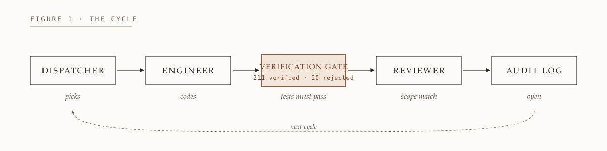
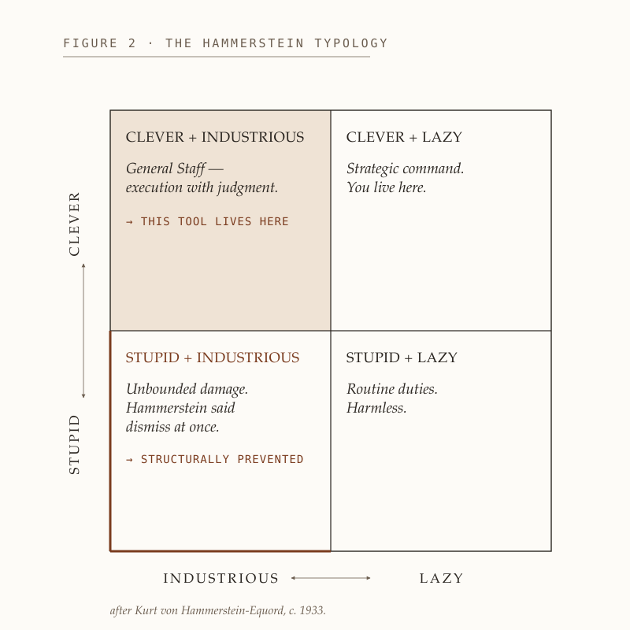
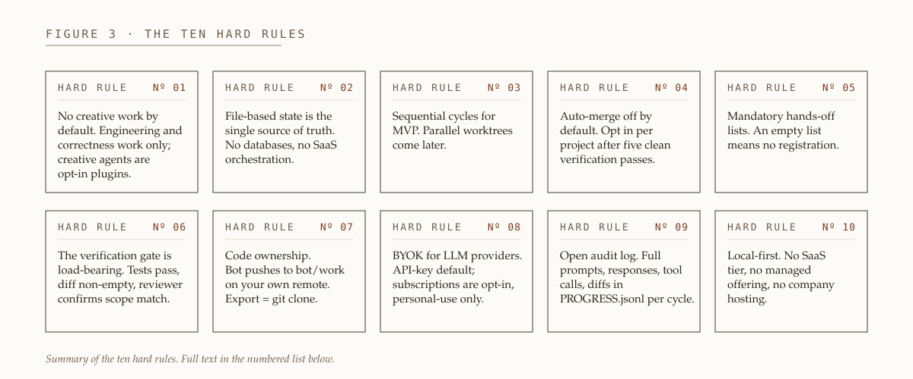

asset 1 · the cycle flow

Five nodes, four forward arrows, and a dashed return arrow labeled
next cycle closing the loop back to Dispatcher. Rust on the
Verification Gate only, with the real 211 verified · 20 rejected
number as a quiet sub-stat.
<p align="center"> <img src="docs/images/cycle-flow.svg" alt="The cycle: dispatcher \u2192 engineer \u2192 verification gate \u2192 reviewer \u2192 audit log, looped" width="900"> </p>
asset 2 · the hammerstein typology

Clever/Stupid on the vertical, Industrious/Lazy on the horizontal. Subtle cream-rust tint on
Clever+Industrious (where the tool lives); rust corner-rule on Stupid+Industrious (the warning).
Attribution line along the bottom, in the book-figure register.
<p align="center"> <img src="docs/images/hammerstein-quadrant.svg" alt="The Hammerstein typology: Clever/Stupid \u00d7 Industrious/Lazy" width="560"> </p>
asset 3 · hard rules grid

Ten index cards, 5 × 2. Each card has HARD RULE
small-caps plus a rust numeral, then the one-phrase gist in serif. The numbered list underneath
in the README is unchanged; this sits above it as a visual summary.
<p align="center"> <img src="docs/images/hard-rules-grid.svg" alt="The ten hard rules of GeneralStaff" width="960"> </p>